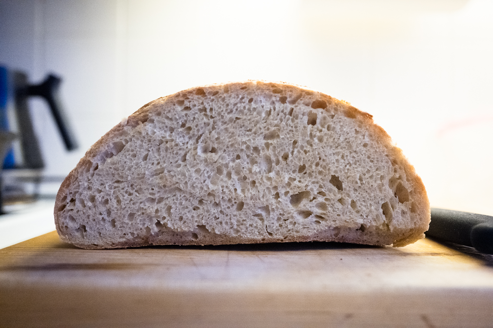

Following my recipe v.1 with noted changes. This loaf is:
- 33% whole wheat
- 9% all purpose flour (because I ran out of bread flour)
- 67% bread flour
Flour is hard to find, because everyone is baking now that they’re at home. Angi bought a 5lb bag of flour that we’re splitting.

Overnight levain with starter diluted 1 in 11. Started autolyse at 11am, planned a 2 hour autolyse but it was more like 2.5 hours. Started mix around 1:30pm, started the clock on bulk at 1:45pm. Rubaud mixed 10 mins.
I had to add water as I mixed to get the dough to the consistency I’m used to. I think the ww flour takes more water. Not sure how much I added.
Stretch and folds at 1 hour, 1.5 hours, 2 hours. About 6:45pm, I preshaped. Dough rose much more than N° 21 likely because of the whole wheat. Bench rest for 15 mins, shaped, then another 15 mins on bench. In baskets.
Loaves were already filling a lot of the basket, but they didn’t pass the poke test. I let proof until 8:15pm. I think they still didn’t pass. Poke sprung back pretty quickly but didn’t spring back all the way.
I put in the fridge anyway at 8:15pm, because its been 6.5 hours since mixing and the dough looks to have risen quite a bit.
Excellent oven spring and crust. Crumb is good, though quite even with holes that could be bigger. Taste is good though noticeably sour.
Next, wait on proof till it passes the poke test. Try 4-6 hour autolyse, and with more water, say 800g instead of 750. Make sure dough isn’t dry during autolyse.